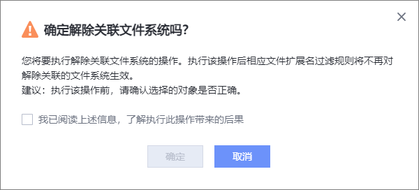
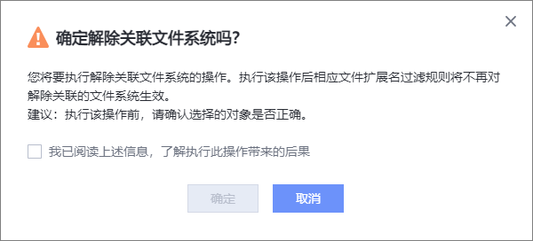

如果您需要对文件扩展名过滤规则解除关联文件系统，请参考本节操作。
操作步骤
- 选择“数据安全 > 文件拦截”。
- 进入“文件扩展名过滤规则”页签。
- 在某个文件扩展名过滤规则所在行，单击。

您也可以勾选多个文件扩展名过滤规则，单击上方的。
- 选择需要解除关联的文件系统，单击“确定”。
- 系统弹出提示框，确认提示信息无误后，勾选“我已阅读上述信息，了解执行此操作带来的后果”，并单击“确定”。

如果您需要对文件扩展名过滤规则解除关联文件系统，请参考本节操作。
您也可以勾选多个文件扩展名过滤规则，单击上方的。
